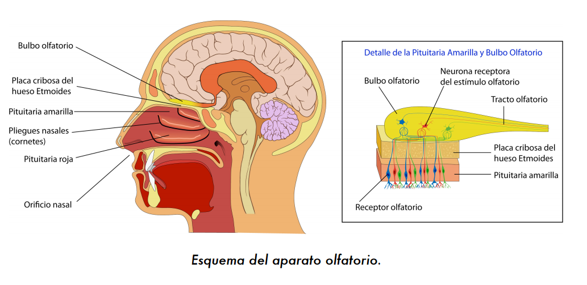

El sentido del olfato está en la nariz. Este sentido nos permite oler y diferenciar los aromas que tienen las cosas.
Para cuidar nuestra nariz es importante mantenerla limpia ya que esto ayuda a tener una buena respiración y a su vez percibir de mejor manera los olores. No introducir objetos a la nariz ya que esto puede dañarla.
